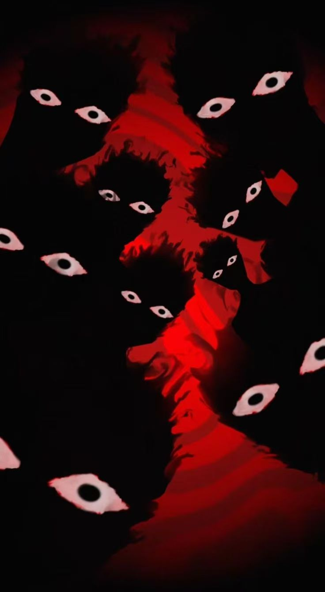

§5 林茂才 · 献祭
许多年以后，我仍然会想起那晚的湖。想起我绕到街后去——回川的街后没有街，只有一条河灯幽暗的小弄，潮得发黏。我想透一口气。没透成。再一抬眼，远处湖面上浮着一团白光。白光不动。水却绕着它，一圈，一圈，像在给它磕头。
我顺着田埂走，踩着稀泥，爬上一处枯芦苇台。芦苇割手。我没有停。
湖心是一座小岛。岛上一座老庙。庙门半开，里面有人。

，签字、念珠与名字
ta们看见你了

我手脚冰冷，正想缩进芦苇堆里，
一抬头，对面正对着我。
一丛枯荷，转过身来。两个小孔的眼窝，对着我，笑。
又一丛。
又一丛。
又一丛。
ta们全在笑。
我看着ta们，ta们看着我，笑着；笑着，嘴里没有舌头。枯荷的嘴裂开，里面是一丝又一丝青白的丝，一丝，一丝，丝丝缕缕。
我听到了那声音。
看看你自己。

我的眼睛里，这边的芦苇、那座小庙、那一池枯荷，全变了。
墙上、地里、人身上、庙的瓦上、湖水里，全是肉。
会抖。会动。会呼吸。
那团气，腥甜，让人想笑，让人想哭，让人恨不能把头埋进自己的胸腔里去，
你不去想那是什么。你只想逃。
§6 逃
我跑。脚踩在泥里，泥是温的。软。
我跑。脚踩在田埂上，埂是活的。
我跑。脚踩在干草上，干草里有一双眼睛。我不看。我只看前面。前面有路灯，路灯亮着，路灯边上站着一个人，那是——不，那是一根。我不认得了。
我在路边坐下。再也跑不动。
我眼睛里的世界没有停。它在变。
青莲、莲瓣、莲芯、莲蓬，一层一层，全是肉。
那根在笑。
那条鱼在笑。
那个朋友在笑。
我也在笑。
我摇了一下头。血漫上来。
§7 雪 禾
我醒来的时候，是一片藕塘。
有个人蹲在我身边。个子矮小，脸庞是孩子的模样。冷调瓷白的脸，眼角猩红血色莲花纹路，唇色浅淡，头上冒着一朵还没开全的荷花。
他看了我一眼。
「嗯。」
「醒了？就你这点胆子，也配被莲之庭那群人吓得半死啊？」
我不知道他是谁。
我只知道，我闻到了甜味。甜腻得要命的青莲幽香。从他身上，从他的头发，从他嘴角抿着的那口莲汁。我吸了半口，整个人就要晕。我摇了摇。
他伸出一根手指，轻飘飘把我下巴一挑。
「我呢，刚刚顺手救了一下你，戏还没演完呢，这么早死，不许。」
我张口想说谢谢。他笑了。那笑，那笑不是笑，是看蚂蚁的看法。
， 雪 禾 救 醒 录 音 ，
（戏还没演完，他说，还不许你下场。）
， 救 者 ： 雪 禾
视频结束的时候，那个少年不见了。藕塘上，只剩一片粉白色的莲瓣，半透明，在风里抖。
我的眼睛里，世界又回到了原本的样子。正常的路、正常的草、正常的冷。
我口袋里，有一张纸质存根。
莲之庭·湖心岛侧门·存根·林
雪禾救醒的录看完，存根背面浮出字。
归位不在此处。去水阁论坛。
· · · 第 二 节 · 完 · · ·